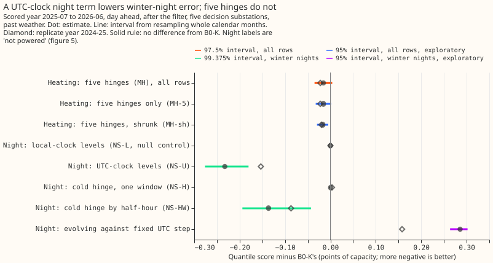
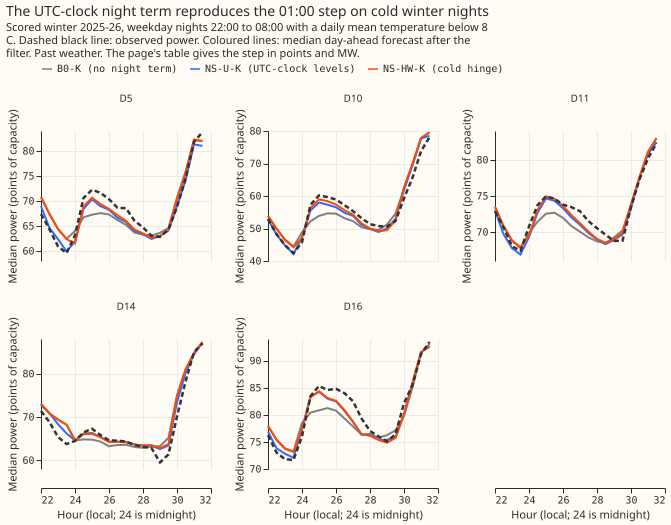
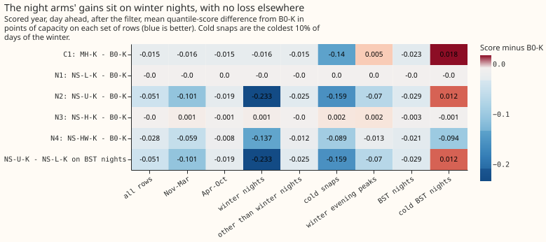
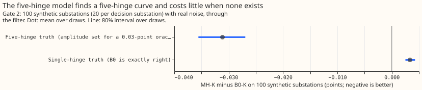
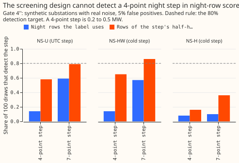

Differentiable physics, MH: multi-hinge heating curve and night step
Adding night-time levels indexed on the UTC clock removes most of the 01:00 jump in demand that
the current forecast misses on cold winter nights, and a five-hinge heating curve adds almost
nothing. We asked two questions of GAM-K, the fitted model of primary substation demand (a primary
substation is a substation of the electricity distribution network that supplies local feeders) that
the differentiable-physics series of experiments uses. First, does letting its heating response bend
at five temperatures instead of one lower the forecast error? Second, does a night-time step term,
such as the load that Economy 7 meters and storage heaters switch on at about 01:00, lower the error
on winter nights? (Economy 7 is a UK off-peak electricity tariff.) We fitted each change at five
substations, forecast each one day ahead for the 12 months from July 2025, and scored it on the same
rows as the unchanged model, which the page calls B0-K. We tested the fitting code on synthetic
substations first. The five-hinge curve lowered the error by 0.016 points against B0-K, a tie. The
UTC-indexed night term lowered the error on winter nights by 0.23 points, and the gain held in the
previous winter (2024-25). The synthetic tests could not show that a step this small can be
detected, so every night label stays not powered and the verdict is inconclusive.
The quantile score is twice the mean pinball loss over 11 quantile levels, so lower is better. It is measured in points, which are percent of a substation's effective capacity and not MW, after the recent-error filter (a Kalman filter that corrects each forecast with the latest metered error) unless stated. All forecasts use observed ERA5 temperature and CAMS irradiance instead of weather forecasts, so each number is a ceiling for a live forecast. One point is 0.054 to 0.117 MW depending on the substation (effective capacity 5.72 MW at D5, 5.40 at D10, 10.78 at D11, 11.71 at D14, and 9.12 at D16).
| Code | Meaning |
|---|---|
| B0, B0-K | GAM-K with one 15.5 C heating hinge; the suffix K adds the recent-error filter |
| MH | B0 plus heating hinges at 10, 12, 14, 16, and 18 C (MH-5 replaces B0's; MH-sh shrinks them) |
| NS-L, NS-U | free levels for the 20 half-hours from 22:00 to 08:00 on the local or the UTC clock |
| NS-H, NS-HW | the cold hinge times one night window (NS-H) or times each night half-hour (NS-HW) |
| NS-UT | NS-U with a level that drifts month to month |
| C1, N1 to N4 | the pre-registered contrasts: C1 is MH-K minus B0-K; N1 to N4 are NS-L-K, NS-U-K, NS-H-K, and NS-HW-K minus B0-K on winter nights |
not powered |
the synthetic test could not show that the contrast would detect the effect it targets |
Take-home message and verdict
- Night terms lower the winter-night score by 0.233 points. NS-U-K (free night levels on the UTC clock) minus B0-K is −0.233 points on winter nights (99.375% interval −0.276 to −0.180, drawn from only 5 resampled init-time months, so lean on the site and winter consistency), better at 5 of 5 substations, with −0.153 (95% interval −0.183 to −0.121) in the replicate winter 2024-25. The forecast of the 01:00 step on cold winter nights rises from 15 to 45% of the observed step to within 0.2 to 3.1 points of it (figure 2, table below).
- The five-hinge heating curve ties with the single hinge. MH-K minus B0-K is −0.0155 (97.5%
interval −0.035 to +0.004), −0.022 in the replicate year, better at 5 of 5 substations in both
years. The label is
tie. The gain sits in cold snaps (−0.140 in the scored winter, −0.077 in the replicate winter) and not in winter evening peaks (+0.005). - The verdict is
inconclusive. The MH label istie. Every night label isnot poweredbecause all three synthetic detection gates failed: a 4-point step is detected in 14%, 14%, and 8% of draws (80% needed, figure 5). The estimates for NS-U-K and MH-K above are results on real data and are reported in full; the pre-registered rule does not let them earn a label. - Production status is
candidate, not adopted. NS-U and NS-HW are the arms worth an ENS confirmation plan with monthly refits, after an independent audit by a reviewing agent (triggers 1, 2, 4, 5, and 7 below).

Figure 1 shows the heating contrasts near zero and the UTC-indexed night contrasts well below it. The evolving night step (NS-UT) is worse than the fixed one.
The forecast reproduces the 01:00 step only with a night term
B0-K gets 15 to 45% of the observed step; NS-U-K and NS-HW-K get most of it. The table gives, over cold winter weekday nights (22:00 to 08:00, daily mean temperature below 8 C, 55 to 59 nights per substation in the scored winter, 64 to 65 in the replicate winter), the median observed step (half-hour starting 00:30 minus the half-hour starting 00:00) in points and MW, and each forecast's median step minus it, with a 95% interval from resampling nights. This readout includes rows inside the switching masks, which every score on the page excludes; excluding them moves the gaps by at most 0.5 points.
| Substation | Observed step, points (MW) | B0-K minus observed | NS-U-K minus observed | NS-HW-K minus observed |
|---|---|---|---|---|
| D5 | 7.0 (0.40) | −4.3 (−4.8 to −3.4) | −0.5 (−1.0 to +0.4) | +0.3 (−0.5 to +1.0) |
| D10 | 11.3 (0.61) | −7.9 (−8.3 to −7.5) | −3.1 (−3.4 to −2.7) | −2.6 (−3.0 to −2.0) |
| D11 | 3.6 (0.38) | −2.0 (−2.3 to −1.7) | −0.2 (−0.5 to +0.1) | +0.2 (−0.1 to +0.5) |
| D14 | 1.8 (0.22) | −1.6 (−2.0 to −1.5) | −0.3 (−0.6 to −0.1) | −0.1 (−0.5 to +0.1) |
| D16 | 7.9 (0.72) | −6.0 (−6.6 to −5.2) | −1.9 (−2.5 to −1.2) | −1.4 (−2.0 to −0.8) |

Figure 2 shows the observed jump after midnight and the forecasts that follow it. The largest remaining median miss of NS-U-K is 4.6 points high at 07:00 at D10 (the morning rise), 2.5 points high at 23:00 at D5, and 2.2 to 3.2 points low between 01:00 and 03:00 at D11, D14, and D16. B0-K's largest miss is 3.6 to 5.8 points low after the step at D10, D11, D14, and D16, and 4.6 points high at 23:00 at D5. The maintainer's rule is that a visible miss on cold winter nights counts against release even when the mean score is unchanged.
The night gain sits on winter nights and costs nothing elsewhere

Figure 3 shows the night arms' gain on winter nights and no loss on other rows. Per substation, NS-U-K minus B0-K on winter nights is −0.299 at D5, −0.359 at D10, −0.092 at D11, −0.222 at D14, and −0.216 at D16. Pooled, NS-U-K minus B0-K is −0.233 on winter nights, −0.101 in November to March, −0.019 in April to October, −0.025 on rows other than winter nights (99.375% interval −0.048 to −0.001, so the +0.02 upper bound holds), and +0.012 on 676 cold British Summer Time (BST) night rows. NS-HW-K is −0.137 on winter nights, −0.012 on other rows (upper bound +0.001), and −0.094 on cold BST nights. MH-K's gain is −0.140 in cold snaps (the coldest 10% of days of each winter, 16 days per substation and winter; the rule uses the 6-hour trailing mean of temperature, not the daily mean of ERA5, so the cold-day subsets shift slightly under the other definition) and +0.005 on winter evening peaks, +0.019 on cold BST nights. The step was found on scored-winter rows, so only the replicate winter 2024-25 (−0.153) is a clean test; the tuning winter 2023-24 is descriptive only.
Pooled scores of every arm
Scored year, all rows, pooled over the 5 decision substations (points): B0 2.884, B0-K 2.255, MH-K 2.240, MH-5-K 2.240, MH-sh-K 2.238, NS-L-K 2.255, NS-U-K 2.204, NS-H-K 2.255, NS-HW-K 2.227, NS-UT-K 2.339; experiment 114's T-all-K 2.216 and H-site-K 2.243; Part 4's WK 2.267, A2 2.275, lagless XGBoost with the filter 2.496, manual heuristic 3.488, climatology 4.068. On winter nights: B0-K 2.061, MH-K 2.045, NS-U-K 1.829, NS-HW-K 1.925. On the 66,849 rows that BG2's stored predictions share (no interval; the sets do not cover every row), NS-L-K (equal to B0-K) minus BG2 is −0.265 and NS-U-K minus BG2 is −0.317.
Heating curve results
| Contrast (scored year, after the filter) | Estimate | Interval | Replicate | Sites better |
|---|---|---|---|---|
| C1: MH-K − B0-K (planned, 97.5%) | −0.0155 | −0.035 to +0.004 | −0.022 | 5 of 5 |
| MH-K with B0's filter − B0-K (control) | −0.0157 | −0.033 to +0.001 | −0.023 | 5 of 5 |
| MH-5-K − B0-K | −0.0155 | −0.032 to +0.002 | −0.022 | 5 of 5 |
| MH-sh-K (multiplier 1000) − B0-K | −0.0168 | −0.030 to −0.005 | −0.020 | 5 of 5 |
| MH − B0 (unfiltered) | +0.0001 | −0.037 to +0.039 | −0.030 | 2 of 5 |
| MH-K − H-site-K (experiment 114) | −0.0035 | −0.009 to +0.001 | −0.001 | 4 of 5 |
| MH-K − T-all-K (experiment 114) | +0.0233 | −0.001 to +0.051 | +0.016 | 1 of 5 |
The label is tie. The interval includes zero, so the rule gives tie although the replicate
year's interval lies below zero (−0.042 to −0.004). Leaving D10 out gives −0.0163 (−0.030 to
−0.002), a small gain, so the label depends on one substation (trigger 4). The filter-fit
control agrees with the label, and the unfiltered contrast is zero, so the gain exists only after
the filter. MH-sh at its tuning-year multiplier of 1000 (interior of the grid up to 100000) is the
same size. The pooled-curve coverage gate returned 66%, outside 70 to 90%, so no curve summary or
per-substation curve is shown.
Synthetic tests run before any scored fit
- Test 1 passed at all four cuts, and B0-K reproduces experiment 114's stored scored-year B0-K exactly (difference 0).
- Gate 2 passed. On 100 synthetic substations, MH-K minus B0-K is −0.031 (80% interval −0.036 to −0.027) under a five-hinge truth, recovering 83% of the 0.037-point oracle gain, and +0.003 under a single-hinge truth (limit +0.01). The curve-coverage check returned 66%.
- Gate 4 as written failed, as predicted: NS-L is collinear with B0's profile (added effective degrees of freedom 0.0), and the winter-night criterion cannot be met because winter local time equals UTC.
- Gate 4' as first written failed (NS-U beat B0 on BST nights in 74% of draws against 80% needed; NS-HW beat B0 on winter nights with a cold step in 72% against 90%). It was redefined after seeing that failure.
- Gate 4'' (redefined with a stated effect size and power target) failed. At 5% false
positives (1 to 4% verified), a 4-point step (0.2 to 0.5 MW) is detected on the label's night
rows by NS-U in 14%, NS-HW in 14%, and NS-H in 8% of draws; a 7-point step in 59%, 57%, and 10%.
On the step's own half-hour: 58%, 65%, and 16% for 4 points. NS-U does not detect a local-clock
step (5%). Because gate 4'' failed, N2, N3, N4, and the indexing contrast are
not powered, and the plan fixes the verdict atinconclusive.


Night terms in detail
The clock that indexes the night step is not identified. NS-U-K minus NS-L-K on BST nights is
−0.029 (95% interval −0.069 to +0.013) in the scored year and −0.077 (−0.107 to −0.040) in the
replicate year, better at 5 of 5 substations in both. The indexing label is indexing not
identified because gate 4'' failed. Cold BST nights (daily mean below 8 C) number 5 to 7 per
substation in the replicate year and 5 to 11 in the scored year, so the clock contrast is
cannot tell per substation, except at D10 and D11 in the scored year (11 nights each). As
descriptive evidence only, on BST weekday nights the observed step sits at 01:30 local (00:30 UTC)
at D10, D16, and D5 (about 1 point), with no step at 00:30 local. The winter gain cannot separate
the clocks, because in winter local time equals UTC. Trigger 2 below gives the likely source of the
winter gain.
An evolving night step (NS-UT) is worse than a fixed one. NS-UT-K minus NS-U-K is +0.286
(95% interval +0.264 to +0.302) on winter nights, and NS-UT-K is 0.084 points worse than B0-K on
all rows although NS-UT before the filter is 0.098 points better than B0. Its fitted winter level
(points, MW in the stored file ns_ut_step_by_winter.json) falls from 5 to 1.4 points at D5
between winters 2021-22 and 2022-23 and rises to 4.7 in 2024-25. D14 is 4.4, 0.2, 2.9, and 0.1.
These are descriptive: a fit at each cut sees only the 24 months before it, and winter 2025-26
is outside every fit.
NS-H, one cold-hinge window from 00:00 to 07:00 UTC, adds nothing (+0.0005). NS-HW, which lets the cold hinge differ by half-hour, gains −0.137. NS-L is a null control: its scores equal B0's to 1e-4 points. The filter-fit control for the night arms agrees: NS-U-K with B0's filter minus B0-K on winter nights is −0.224, against −0.233.
Consistency checks
- The median forecast equals the mean forecast. The median minus the mean is 0.0000 points at every substation for B0-K, MH-K, NS-U-K, and NS-HW-K, so the quantile spread does not shift the median forecast.
- Error of the mean forecast beside each score contrast: C1 −0.031 (score −0.0155), N2 −0.465 (−0.233), N4 −0.280 (−0.137); the signs agree.
- No arm moves a tail more than 1 point from nominal. After the filter the q95 coverage is 0.941 to 0.942 and the q99 coverage 0.983 for B0-K, MH-K, NS-U-K, and NS-HW-K.
- Four audit triggers fired. (1) The positive controls failed: gates 4, 4', and 4'' and the
pooled-curve coverage check (66% against 70 to 90%). (2) The plan predicted NS-U-K and NS-L-K
within 0.01 on winter nights, and they differ by 0.233. The explanation, which is post hoc: B0's
profile is one year-round level per local half-hour and day type, so it cannot hold a step that is
large in winter and small in summer. NS-U can, so the winter gain may come from the difference
between the GMT and BST seasons and not from the UTC clock. (4) Leaving D10 out changes C1 from
tietosmall gain. (5, applied by analogy) NS-UT-K scores worse than B0-K, which it nests (the explanation, the held last level meeting the filter, is untested); (7, by judgement, since no label isgain) the night term is meant to enter GAM-K. An independent audit by a reviewing agent is planned before the night result is used. No trigger fired for the others: test 1, gate 2(b), and B0-K's reproduction of experiment 114 passed, and C1's interval width (±0.019) sits inside the sister contrast's ±0.023.
Predictions against outcome
The heating predictions held and the night predictions held only in sign. C1 fell in the predicted range (−0.016 against −0.03 to +0.01) with the predicted label, MH-K against H-site-K and T-all-K and MH-5-K matched, and gate 2(b) matched. The sign of the night gain was predicted, but its size was not: at D10 it is −0.36 (predicted −0.10 to −0.30), and at D11 (−0.09) and D14 (−0.22) it is far above the predicted "under 0.03". NS-U-K and NS-L-K were predicted within 0.01 on winter nights and differ by 0.233. The tuning-year NS-U-K gain of 0.043 was not expected to carry over and became 0.233 on winter nights. Three other predictions failed: the unfiltered MH gain was not larger than the filtered one (+0.0001 against −0.0155), gate 2 recovered 83% of the oracle gain (predicted 50 to 70%), and the MH gain did not sit in November to March (−0.0155, against a predicted more than 0.02), although cold snaps carry −0.140.
Caveats
- Every number is a past-weather ceiling (ERA5 temperature and CAMS irradiance), one scored year with frozen fits, hindsight masks, and one replicate winter.
- The night step was identified on scored-year rows (experiment 111's stored residuals), so the scored winter is not a clean test for the night arms. The replicate winter confirms the sign and roughly two thirds of the size.
- The scored year has served experiments 106, 111, 114, and this one, and MH was chosen after seeing experiment 114's scored-year contrasts.
- Leaks, none reaching a scored row: the 2022-07-01 replica reads the 2023-08-07 capacity vintage 13 months late; the 2023-07-01 cut has the 5-week vintage leak; D9's 2024-07-01 fit reads the 2025-04-14 vintage; the replicate-year filter spread is in sample for the filter hyperparameters.
- Gate 4'' replaces gate 4' as first written, which is kept above. The redefinition came after the first failure and before any scored fit.
- Provisional substation cards (fitted to past weather on a screening run) are in the same
folder as
card_D5.svg,card_D10.svg,card_D11.svg,card_D14.svg, andcard_D16.svg. D9 is short-history and has no card. - The experiment 114 merge commit (503ce3a3de408d1f0c2bdbada5ba88032ff238bb) is recorded in
the hashed
decisions.json.
Citations
The convex-model-plus-filter design follows Fasiolo et al. (2021), who fit additive models with quantile output, and Obst et al. (2021), who forecast with an adaptive component on top of a fitted model. Experiments 104, 106, 111, and 114 supply the base model and its filter.
Reproducing
OMP_NUM_THREADS=1 uv run python ml-experiments/00121-*/e00121_test1.py --cuts replica_tuning tuning
replicate scored uv run python ml-experiments/00121-*/e00121_tune.py --force uv run python
ml-experiments/00121-*/e00121_gate2.py run uv run python ml-experiments/00121-*/e00121_gate4.py run
uv run python ml-experiments/00121-*/e00121_gate4b.py run uv run python
ml-experiments/00121-*/e00121_fit.py uv run python ml-experiments/00121-*/e00121_report.py uv run
python ml-experiments/00121-*/e00121_nightstep.py uv run python
ml-experiments/00121-*/e00121_charts.py uv run python ml-experiments/00121-*/e00121_cards.py
Appendix: the plan as committed before the fits, with its clarifications
The question, and what earlier experiments already say
B0's single hinge already makes the heating response non-negative and convex, so MH asks only
whether more bends help. B0 has 16 heating columns: one relu(15.5 - T) hinge for each of 4
smoothings of ERA5 temperature in each of 4 hour bands, with non-negative slopes. Five hinges per
column let the slope per degree grow in steps as it gets colder (zero above 18 C, and growing at
each of 18, 16, 14, 12, and 10 C). This is a free, monotone, convex temperature curve of the kind
the literature fits, in place of one fixed threshold.
Experiment 114 gives two reasons to expect a small gain and one to expect none.
- Its loss profile over a single hinge preferred a threshold at or below 12 to 14 C at 4 of 5 substations, yet the per-site threshold lowered the filtered score by only −0.012 points (97.5% interval −0.030 to +0.007). One hinge cannot represent a flat region and a steep region together.
- Splitting each hinge by half-band gained −0.039 (−0.070 to −0.014). MH tests a different missing piece, the shape across temperature, and is not expected to gain as much.
- Against: experiment 113 found a band heating slope weak at real noise (80% interval about 38% of the slope wide). Five hinges split each slope five ways on the same mild-weather days.
Every contrast is a past-weather ceiling (ERA5 temperature of the target half-hour); only the ENS confirmation in "Handed on" tests transfer.
Base model, years, sites, and rows
All as in briefs/dp_n3n4.md, so that experiment 114's stored predictions remain comparable.
- B0 and B0-K:
dp_gamwithdrift="none",capacity="pinned"(studies.dp_pinned_capacity), ridge 0.1,TrainingWindow(months=24), lockdown out. B0-K addsdp_assimilation.run_kalmanunder the 3.5-hour cut with four filter hyperparameters per site, fitted on each arm's tuning-year residuals byfit_filter_hyperparameterswith Part 4's prior. - Years: tuning 2023-07-01 to 2024-06-30 (cut 2023-07-01), replicate 2024-07-01 to 2025-06-30,
scored 2025-07-01 to 2026-06-30. Screening tier: one frozen fit per arm and cut, no refits, one
seed. Each cut's spread comes from the replica fit 12 months earlier (
dp_gam.replica_residuals), so fits run at 2022-07-01, 2023-07-01, 2024-07-01, and 2025-07-01. Nothing scores a valid time on or after 2026-07-01. - Sites: D5, D10, D11, D14, and D16 decide (4 of 5 needed to improve); D9 descriptive in the scored year only. MVA sites, D15, and D18 are not fitted.
- Masks, leads, predictions: as experiment 114 (hand-filtered switching list padded 24 hours, 09:00 UTC origins, day D+1, the same prediction columns).
Arms
Each arm is B0 with its 16 heating columns replaced, solved by
dp_gam.solve_bounded_quadratic on per-month Gram matrices (the pattern of
e00114_design.py, copied, not imported). Each arm runs unfiltered and filtered (suffix -K).
| Arm | Heating columns | Role |
|---|---|---|
| B0 | one hinge at 15.5 C (16 columns) | reference, refitted |
| MH | B0's 15.5 C hinge plus hinges at 10, 12, 14, 16, 18 C (96 columns), all slopes non-negative, B0's ridge 0.1 on every column | decision arm; nests B0 (the five added blocks at zero) |
| MH-5 | the five hinges alone (80 columns) | exploratory: the free curve with no fixed hinge |
| MH-sh | MH with the five added blocks' ridge multiplied by m in | exploratory; m chosen on the filtered tuning-year score, and m to infinity is B0 |
| 114 refs | T-all-K, T2-K, H-site-K | re-read from experiment 114's stored predictions |
- The hinge is
relu(theta - T_k) / HEATING_SCALE_Con the same four smoothed temperatures ase00114_design.hinge_block, called at five thresholds. The sign bounds make each slope a non-negative increment, so the curve cannot fall as it gets colder, and it stays convex. - Fair comparison: the decision arm MH is B0 plus extra non-negative columns at B0's own ridge,
and nothing about MH is tuned, so B0 and MH are on the same footing (B0 has no tuned setting to
match).
dp_gam's ridge is not scaled by the row count, so on 35,000 rows it shrinks almost nothing (seebriefs/dp_n3n4.md); the non-negative bounds are the main regulariser. MH-sh is the one place a penalty is tuned, with the grid starting at 10 because multiplier 1 is MH itself. It is exploratory because B0 cannot be tuned in the same way. The effective degrees of freedom of the added columns are printed for MH and for each m. A difference penalty on adjacent hinge slopes was considered and left out to keep the plan small. - Why these positions: 12 and 14 C straddle the loss minima of experiment 114; 16 and 18 C cover the mild side; 10 C is the only cold-tail hinge. Positions are fixed before any fit.
Night-step arms (NS)
Why: a read-only check of experiment 111's stored GAM-K predictions (one winter, November 2025 to February 2026, and one summer pair, July to August 2025 and May to June 2026, weekdays only) found an unmodelled step at 01:00 (the 00:30 to 01:00 half-hour) in winter. Actual demand steps up by 7.1, 10.7, and 7.4 points at D5, D10, and D16 (1.9 to 3.4 points at D11, D14, and D9), and GAM-K's residual step is 4.4, 7.3, and 5.4 points at D5, D10, and D16. In summer the step shrinks to 1.7 points or less, and its position (UTC or local clock) cannot be told apart. The check used one winter and one summer pair, so the summer reading is weak. Winter local time equals UTC, so winter rows cannot separate the two indexings; only British Summer Time (BST) rows can.
Four arms (NS-HW was added before any replicate or scored fit; see the clarifications), each B0
plus extra columns at B0's ridge 0.1, so each nests B0; each runs filtered (-K) and unfiltered.
| Arm | Extra columns | Sign |
|---|---|---|
| NS-L | one level per half-hour of the 20 half-hours from 22:00 to 08:00 local time | free |
| NS-U | the same, indexed on the UTC clock (22:00 to 08:00 UTC) | free |
| NS-H | B0's 15.5 C hinge (4 smoothings) times an indicator for 00:00 to 07:00 UTC | non-negative |
| NS-HW | the same hinge (4 smoothings) times each of the 20 UTC night half-hours (80 columns) | non-negative |
NS-H lets the step grow in cold weather, as storage heating does. NS-L and NS-U agree on every winter row, so the NS-L against NS-U contrast uses BST nights only. The 20 levels are free, with B0's ridge. Half-hour labels are start times (the 01:00 step is the half-hour 00:30 to 01:00). NS-H's window (00:00 to 07:00 UTC) is narrower than the 22:00 to 08:00 window of the other arms, so NS-H cannot see a step before midnight. NS-L is a null control, not a candidate (see the clarifications).
Known-answer test and gate
Order: test 1, then tuning (the MH-sh multiplier and the filter hyperparameters, hashed with the
114 SHA into decisions.json), then the gate, all before any MH row of the replicate or scored
year is fitted or read. The B0-K reproduction in test 1 reads stored B0 output only. A failed
test 1 stops the scored reading. A failed gate does not stop it (the data cost is zero), but the
verdict is then fixed so that the MH label is not powered and C1 is printed with no label. The
gate can fail by
design.
- Reproduction (blocking). MH with only the 15.5 C hinge reproduces
dp_gam.fit_gamfor B0 to 1e-8 relative in the parameters; MH with the five added blocks forced to zero reproduces B0's fitted values to 1e-5 points; B0-K's filter on stored B0 residuals reproducesrun_kalmancalled directly; B0-K reproduces experiment 114's stored B0-K scored-year score to 1e-4; no training row after its cut. - MH power check (synthetic, run through the filter, can fail). The truth is B0's real fit
at the 2024-07-01 cut with its heating block replaced by a five-hinge curve: B0's slopes
spread across the hinges, the cold-end share scaled by a common amplitude per draw.
- Noise: experiment 113's real-noise rule (
e00114_noise.py, copied), whole donor months from the other decision sites' B0 residuals. Donor residuals are in-sample, so they are inflated by the ratio of B0's out-of-sample to in-sample RMSE on the tuning year, per site. Only covariates (temperature, calendar) of the 2024-25 year enter the held-out synthetic year, and no 2024-25 residual does. Power is still an upper bound. - Sizing, as a formula: oracle gain = score of B0-K (fitted to the draw) minus score of the true-parameter forecast with B0-K's filter, on the held-out synthetic year, minus the same difference under a single-hinge truth at 15.5 C. The amplitude is set on 5 pilot draws so that the oracle gain is 0.03 points after the filter, the decision margin. The unfiltered oracle gain is printed beside it.
- Pass if (a) the paired mean of MH-K minus B0-K over the 100 draws (20 per site, B0-K's filter hyperparameters) is at most −0.015, half the oracle gain, with its 80% interval over draws wholly below zero; and (b) on a single-hinge truth at 15.5 C, the paired mean of MH-K minus B0-K over 100 draws is no worse than +0.01. Per-site counts and the share of the oracle gain recovered are descriptive.
- Failure:
not powered; see "Decision rule".
- Noise: experiment 113's real-noise rule (
-
Pooled-curve coverage (descriptive, in the same draws). The 80% month-block bootstrap interval (I1 of experiment 113: calendar quarters kept, widened by sqrt(m/(m-1))) for one pooled summary: the fitted heating response at 5 C divided by the response at 12 C, summed over the four bands and four smoothings. Coverage of the truth over the 100 draws is printed. If coverage lies outside 70 to 90%, no curve summary appears on the page. A pass says the interval is calibrated on synthetic data only, not on real data. The summary is also dropped if any decision site has fewer than 500 half-hours below 5 C in any fit window (the counts below 5 C and below 10 C are printed per site and cut). It carries no label.
-
Night-step indexing gate (synthetic, unfiltered, can fail). Same generator and noise as step
- The truth is B0's real fit plus an injected 4-point step at 01:00 UTC, indexed in UTC in one
set of 100 draws and in local time in another (the two differ only in BST rows). Pass if
(a) on each truth, the matching arm beats the other indexing on BST nights in at least 80% of
draws, (b) on winter nights both arms beat B0 on both truths in at least 90% of draws, and (c)
on each truth the mismatched arm does not recover the injected level on BST nights (its fitted
level at the injected half-hour is under half the injection). Failure:
indexing not identified; the NS-U against NS-L contrast is printed unlabelled.
Clarifications made after the tuning-year work and before any replicate or scored fit
These changes follow the first tuning-year run (cuts 2022-07-01 and 2023-07-01 only). No replicate-year or scored-year fit had been run, and no score of those years had been read. They are agreed with the experiment manager.
- NS-L is redundant by construction. B0's free profile has one level per day type and local half-hour of day, so a free level per local half-hour adds nothing: its added effective degrees of freedom are 0.0 at every decision site, and its fitted values equal B0's. NS-L is kept as the labelled control that shows this. NS-U differs from the profile only in British Summer Time rows, so it tests UTC-fixed timers, not a winter step.
- NS-HW is added as a full arm (N4), judged on winter nights like N1 to N3. It is B0 plus the 15.5 C heating hinge of each of the four smoothed temperatures times each of the 20 UTC night half-hours (80 columns, non-negative slopes, B0's ridge). It models a step that grows with cold, which is how storage heating (Economy 7) behaves. It was added after the tuning-year run showed NS-L and NS-U cannot represent a winter-only step. The night family is now four contrasts, so the Bonferroni level is 99.375%.
- The MH-sh multiplier grid is extended to {10, 100, 1000, 10000, 100000}. The first tuning run chose 1000, the edge of the grid {10, 100, 1000}. The extension is made on the tuning year alone.
- Gate 4 is run as written, and its result is recorded as it stands. Winter local time equals UTC, and a winter step is already free in B0's profile, so criterion (b) (both NS-L and NS-U beat B0 on winter nights) fails by construction. A failure of gate 4 as written does not cap any other label.
- Gate 4' replaces gate 4 as the gate for the indexing contrast and for N4. On the same
generator and noise as gate 4: (a) with a flat 4-point step injected at 01:00 UTC, NS-U beats
B0 on British Summer Time nights in at least 80% of draws; with the step injected at 01:00 local
time, B0 beats NS-U on those nights in at least 80% of draws (B0's profile already holds a local
step). (b) with a step that grows with cold injected on winter nights (4 points on average
over the winter nights, proportional to the 15.5 C hinge of the first smoothed temperature), NS-HW
beats B0 on winter nights in at least 90% of draws, and the mean of NS-HW minus B0 is wholly below
zero. A failure of 4'(a) makes the indexing contrast unlabelled (
indexing not identified); a failure of 4'(b) makes the N4 labelnot powered. NS-L is not part of 4'. - Winter breakdown and cold snaps (maintainer priority). Every contrast is also reported on November to March rows, on a cold-snap subset, and on evening peaks within them, with paired intervals against BG2 and lagless XGBoost where their stored predictions cover the same rows. A cold snap is the days of the scored winter whose daily mean ERA5 temperature at the site's cell is in the coldest 10% of days of that winter; the rule and the day count are stated, and "too few days" is reported where fewer than 5 days qualify. A winter loss alongside an annual gain is stated in the verdict as a reason to hold the arm back. The page states how many independent winters the evidence holds. The substation cards gain a cold-snap panel and the fitted night step (as a score change, not a level).
- The night step was found on scored-year rows, so the replicate winter confirms it. The step
was read from experiment 111's stored GAM-K residuals for November 2025 to February 2026 and for
two summer pairs, all in the scored year. The choice of the 01:00 half-hour, of D5, D10, and D16
as the large cases, and of the "3 of 5 sites" rule came from scored rows, so the scored winter is
not a clean test for the night arms. A night label of
gaintherefore also needs the replicate winter (2024-25) winter-night estimate to be below zero with a 95% interval wholly below zero, or at most half the scored estimate. Without it the label isnot replicated. The evidence is two winters (replicate and scored), plus the tuning winter (2023-24) for descriptive checks. - Which gate covers which label. A label whose gate fails is
not powered, and the verdict treatsnot poweredas notgain. Gate 2 covers C1 (the MH label). Gate 4'(a) covers N2 (NS-U-K) and the indexing contrast. Gate 4'(b) covers N4 (NS-HW-K), and the same test run for NS-H on thecoldtruth (NS-H-K beats B0 on winter nights in at least 90% of draws) covers N3. N1 (NS-L-K) is a null control with no label: its fitted values must equal B0's, so any gain is a bug and audit trigger 5 fires. Gate 4 as written covers nothing. Gate 4' was written after gate 4 had failed by construction; the first-run results of both are kept in the write-up. The NS label is the best label among N2, N3, and N4. - Gate 4' as first written is kept, and gate 4'' replaces it (redefined after seeing gate 4'
fail, before any replicate-year or scored-year fit; agreed with the experiment manager). Gate
4' as first written failed: NS-U beat B0 on British Summer Time (BST) nights in 74% of draws (80%
needed), B0 beat NS-U on a local-time step in 60%, and NS-HW beat B0 on winter nights with a
cold-dependent step in 72% (90% needed); the descriptive 01:00 version gave 77%, 45%, and 80%.
Those thresholds were set without a statement of the effect size or of a power target. Gate 4''
derives its thresholds from both, and they are fixed here before the gate runs. If gate 4'' fails,
the labels it covers stay
not powered, the verdict staysinconclusive, and the gate is not redefined again.- Injected steps. A step of 4 points and a step of 7 points of effective capacity (the sizes
seen at D5, D10, and D16; the units bullet below converts to MW) in the half-hour
starting 00:30. The night-row noise has a standard deviation of 4.6 to 7.7 points at D5 and
D10, so 4 points is about one noise standard deviation. Three kinds: a flat step on the UTC
clock all year (
utc), a flat step on the local clock all year (local), and a cold-dependent step on the UTC clock (cold, equal to a constant times the 15.5 C hinge of the first smoothed temperature, scaled so the mean over the winter rows of that half-hour equals the stated size). Aplacebohas no step. - Units. The quantile score and every step are in points, that is, percent of the
substation's effective capacity, and not in MW. A step of
ppoints isptimes the effective capacity divided by 100 in MW. The effective capacity is a single table value per substation (5.72 MW at D5, 5.40 MW at D10, 10.78 MW at D11, 11.71 MW at D14, and 9.12 MW at D16), so the MW conversion of a step carries the interval of the step in points and no additional interval. A 4-point step is 0.23, 0.22, 0.43, 0.47, and 0.36 MW at D5, D10, D11, D14, and D16, and a 7-point step is 0.40, 0.38, 0.75, 0.82, and 0.64 MW. The measured residual steps of 4.4, 7.3, and 5.4 points at D5, D10, and D16 are 0.25, 0.39, and 0.49 MW. - Statistic. For an arm, the mean quantile score minus B0's on the label's own rows (BST nights for NS-U, winter nights for NS-H and NS-HW), unfiltered, on the same noise.
- Critical value. The 5th percentile of the statistic over 100 placebo draws (20 per substation, draws 0 to 19). An arm detects a step in a draw when its statistic is below the critical value, so the false-positive rate on the placebo is 5% by construction. It is checked on 100 further placebo draws (draws 100 to 119), where at most 8% may detect (the target is 5%; 100 draws carry a Monte Carlo error of about 2 points).
- Pass. (a) NS-U detects the 4-point
utcstep in at least 80% of draws, and detects the 4-pointlocalstep in at most 10% of draws (so the clock is identified); (b) NS-HW detects the 4-pointcoldstep in at least 80% of draws; (c) NS-H detects the 4-pointcoldstep in at least 80% of draws. (a) covers N2 and the indexing contrast, (b) covers N4, and (c) covers N3. - Descriptive. The same statistics for 7 points, and on the rows of the injected half-hour only, per substation. These cannot rescue a label.
- Injected steps. A step of 4 points and a step of 7 points of effective capacity (the sizes
seen at D5, D10, and D16; the units bullet below converts to MW) in the half-hour
starting 00:30. The night-row noise has a standard deviation of 4.6 to 7.7 points at D5 and
D10, so 4 points is about one noise standard deviation. Three kinds: a flat step on the UTC
clock all year (
- Scoring rows and wording of gate 4'. "Beats" means a lower mean quantile score (unfiltered, as in gate 4) over the stated rows, and a tie is not a beat. Gate 4'(a) scores all 22:00-to-08:00 British Summer Time (BST) night rows. Gate 4'(b) scores all winter-night rows. The cold step in gate 4' is a step in the half-hour starting 00:30 UTC whose mean over the winter rows of that half-hour is 4 points. Because a step in one of 20 night half-hours is diluted in these scores, the descriptive 01:00 gate repeats 4' on the rows of the injected half-hour only. It is labelled descriptive and cannot rescue a label.
- Non-inferiority bound against noise. The +0.02 bound is smaller than the sister contrast's half-width (about 0.023 at 97.5%). Night terms change few rows, so the contrast on all other rows should be much tighter than that reference, and the report prints its width. A pass shows only that the upper bound is under +0.02. It does not show equivalence. The winter-night subset has fewer rows than the sister contrast, so its interval is wider, and the 0.05 margin is judged against the printed width.
- One winter definition for labels. Labels use winter nights (November to February, 22:00 to 08:00 local). The breakdown tables also show November to March, and "summer" in the winter-against-summer contrast means June to August. A winter loss beside an annual gain is stated in the verdict as a reason to hold the arm back from production; it does not change the label. Intervals against BG2 and lagless XGBoost are 95% and exploratory, with no multiplicity correction. The "daily mean" in the cold-night rules is the local calendar day.
- The indexing label ignores the cold-night count. The indexing contrast pools the BST nights of all five substations. The cold-BST-night count and "cannot tell" are reported per substation and do not change the pooled label.
- If the MH-sh pick is again at the grid edge (100000, nearly B0), the page reports "at the edge" and MH-sh stays exploratory.
- NS-UT, an evolving UTC night step, is added as an exploratory arm (maintainer steer, before any replicate or scored fit). The size of the Economy 7 effect may change from winter to winter at each substation (experiment 121's tuning year does not show this; the E7 step-by-winter table of PR 1416 suggests it). NS-UT is B0 plus one non-negative level per month of the 24-month training window (25 monthly knots, linear between them) times an indicator for the UTC half-hours starting 00:30 to 07:00, a second-difference penalty of weight 1000 between neighbouring knots (fixed here, not tuned) on top of B0's ridge, and the last knot's level held through the forecast year. It is judged against the fixed-step NS-U on winter nights (a 95% exploratory contrast, NS-UT-K minus NS-U-K), carries no label and no gate, and is outside the Bonferroni family. The cards show its fitted step by winter (mean of the monthly levels from November to February), in points and MW. The UTC-against-local split by year is read descriptively from the NS-U-K minus NS-L-K contrast on British Summer Time nights in the replicate and scored years, with "cannot tell" where a year has fewer than 10 cold British Summer Time nights.
- Does the forecast show the 01:00 step on cold winter nights? (maintainer steer; an operator who sees the step in demand and none in the forecast will distrust the rest.) A cold winter night is a night from 22:00 to 08:00 local time in November to February whose local calendar day has a daily mean ERA5 temperature below 8 C at the substation's cell, a rule fixed here before any score is read; the report prints the number of such nights per substation and year. The descriptive readout, per decision substation, in the scored and replicate years, for B0-K and each night arm: the median over cold winter weekday nights of the forecast step (median forecast of the half-hour starting 00:30 minus the median forecast of the half-hour starting 00:00) against the actual step (the same difference in observed power), in points with the MW conversion once (the units bullet above), with a 95% interval from resampling whole days. The figure for the cards shows the median over cold winter nights of the forecast median and 80% band, and of the observed power, from 22:00 to 08:00, B0-K against the best night arm, at every decision substation. A one-line list names any other miss visible on those nights (for example the timing of the morning rise). This readout is descriptive and does not change a label, but a visible miss on cold winter nights counts against release even when the mean score is unchanged, and the verdict says so.
- The night step on the substation cards (maintainer request; Economy 7 may be reported to NGED). For each decision substation (D-labels), the card shows the fitted night step from the best night arm: its size in points of effective capacity and in MW, its start time, whether it follows local time or UTC (from the NS-U against NS-L comparison, with an interval), and the winter-against-summer contrast with an interval. This replaces the plan's rule that night levels appear as score changes only. Sizes are in points and in MW because the substations are not generators. A generator-linked series, if any, appears only under a G-label with normalised units and no dates. The result states the hand-built arms' winter-night scores plainly, so that the learned daily-shape library of experiment 120 can be compared with them.
- Cold nights in British Summer Time (maintainer request, before any replicate or scored fit). Most Economy 7 load is storage heating, so the night step should grow with cold and a small step is expected in summer. UTC and local time differ only between the clock changes, so a clean test of the clock needs nights that are both cold and in British Summer Time. The page reports, for each decision substation and for the replicate and scored years, the number of such nights. A night counts as cold when the daily mean ERA5 temperature at the substation's cell is below 8 C (the threshold of the cold-tail bin in the plan), fixed here before any score is read. Where a substation has fewer than 10 cold British Summer Time nights in a year, the UTC-against-local contrast for that substation is written "cannot tell". The fitted night step on the cards is shown as a slope per degree below the 15.5 C hinge and a size on a stated cold night (daily mean temperature 3 C), both in points and in MW with intervals from the month-block bootstrap, beside a separate small base level (the free night levels of NS-U), not a single fixed size.
- A winner is carried as a standard GAM-K piece in the recommendation (subject to the ENS confirmation in "Handed on").
Planned contrasts
One planned contrast: 97.5% interval from studies.bootstrap, resampling whole calendar months
of stored predictions, paired across arms, at day D+1, after the filter. Reported with the count
of sites moving each way, every arm's absolute score, the mean-forecast error contrast, the
replicate year's estimate and count, November to March against April to October, the four hour
bands, and leaving one site out.
- C1: MH-K minus B0-K (decision, if the gate passes). Beside it: MH minus B0 (unfiltered).
- N1, N2, N3, N4 (night family): NS-L-K, NS-U-K, NS-H-K, and NS-HW-K each minus B0-K, on winter nights as the primary score (November to February, valid times 22:00 to 08:00 local), at 99.375% (Bonferroni over four). Non-inferiority on all other rows: the contrast on every row outside winter nights must have its 99.375% upper bound at most +0.02 points. The annual average is reported and is not decisive. Calendar-type terms act on a few hours of the year, so the annual mean dilutes them. Each arm has its own filter hyperparameters, with the control below.
- Indexing contrast: NS-U-K minus NS-L-K on BST nights (April to October), 95%, labelled
UTCif wholly below zero (consistent with GMT-set timers),localif wholly above,unresolvedotherwise, only if gate 4'(a) passes. The summer step is 1.7 points or less, sounresolvedis the likely outcome. - Filter-fit control: MH-K and each night arm run with B0-K's stored filter hyperparameters
(MH-K-b0 and so on). If C1's
label differs between MH-K and MH-K-b0, or the estimate moves by more than its half-width, C1
is
inconclusive: the gain sits in the filter fit, not the curve. - Row alignment: contrasts against 114's arms use an inner join on
(time_series_id, valid_time, lead_hours), row counts printed, 114's masks unchanged. - Exploratory (95%): MH-5-K minus B0-K, MH-sh-K minus B0-K, MH-K minus H-site-K, and MH-K minus T-all-K (descriptive: T-all-K is expected to beat MH-K).
Margin and noise reference. MH adds 80 columns to the same bounded solver, so porting a gain into GAM-K costs almost nothing. The 0.03 margin is therefore not a porting-cost threshold; it justifies an ENS confirmation run, which needs its own plan. The sister contrast is Part 4's C4 (A2 minus A3, scored year, D+1): −0.015 (−0.053 to +0.003) at 99.17%, about ±0.023 at 97.5%. Experiment 114's C1 and C2 half-widths were 0.028 and 0.018. A contrast that reaches 0.03 with an interval wholly below zero cannot be noise at the reference level, and a gain below 0.015 is inside what the reference noise alone could produce.
Tails, every arm: coverage and pinball at q01, q05, q95, and q99 beside the headline; a gain that moves q95 or q99 coverage more than 1 point from nominal is flagged (no label change). No curtailment cost: these are demand Primaries.
Predictions
Written before any fit; each line can fail, and none overrides the decision rule.
- C1: MH-K minus B0-K between −0.03 and +0.01 in both years, and
small gainortieas a label. A weakgainis the optimistic case. More than 0.02 of any gain sits in November to March and the cold tail (daily mean temperature below 8 C), where the 10 C hinge carries weight. - MH-K versus H-site-K (−0.012): within ±0.02; versus T-all-K (−0.039): worse by at least 0.02. MH-5-K within 0.01 of MH-K.
- Unfiltered MH minus B0: more than 1.5 times the filtered gain in magnitude, because the filter absorbs a level error from missed curvature.
- Gate 2: (a) passes narrowly, recovering 50 to 70% of the oracle gain; (b) passes with a
paired mean between 0 and +0.01 (per-site misses of 0.005 to 0.01 at up to 3 sites do not fail
it). The chance of
not poweredis judged at about one in three. - N2 to N4: winter-night gain of −0.10 to −0.30 points at D5, D10, and D16 and under 0.03
at D11, D14, and D9 for the arm that fits the step; non-inferiority holds. N1 (NS-L-K) ties
B0-K to 1e-5 points. NS-U-K and NS-L-K are within 0.01 on winter nights. The indexing label is
indexing not identifiedif gate 4'(a) fails, and otherwiseunresolved. The tuning year already shows NS-U-K 0.043 points better than B0-K after the filter, which is not predicted to carry over to winter nights. - Pooled-curve coverage under 70%, so no curve summary is drawn. B0-K within 0.01 of its experiment 114 value (2.255); the run under 1 hour.
Decision rule
- Label for C1 (gate passed and MH-K-b0 agrees):
gainif the estimate is at most −0.03 points, the 97.5% interval lies wholly below zero, the replicate year's estimate is below zero, and at least 4 of 5 sites improve in the scored year.small gainif the interval lies wholly below zero, the estimate is between −0.03 and zero, and the replicate year's estimate is below zero.not replicatedif the scored interval lies wholly below zero but the replicate sign (or, forgain, the site count) fails.worseif the interval lies wholly above zero;tieotherwise. The replicate condition is required because the MH-sh multiplier and the filter's hyperparameters are chosen on the tuning year. The replicate estimate is printed beside every scored estimate in the headline chart and tables. - Label for N2 to N4 (each gated as the clarifications say; N1 is a null control):
gainif the winter-night estimate is at most −0.05 points, the 99.375% interval lies wholly below zero, the replicate year's winter-night estimate is below zero with its 95% interval wholly below zero or at most half the scored estimate, at least 3 of 5 sites improve (the step is large at three substations), and non-inferiority holds.small gainif the interval lies wholly below zero, the estimate is between −0.05 and zero, and the replicate is below zero.not replicatedandworse(interval wholly above zero) as for C1;tieotherwise. Failure of non-inferiority givesworse on other rowsand nogain. The NS label is the best label among N2 to N4. The indexing contrast is the only statement about which clock the step follows. - Gate failure or control disagreement (MH): label
not powered(gate) orinconclusive(filter control); the scored C1 is still computed and printed with no label, and the MH label is notgain. Take-home then says whether the printed estimate reached the margin, as information only. - Verdict:
supportedif both the MH label and the NS label aregain;partly supportedif one is (anot poweredlabel never counts asgain);small gainif neither and one issmall gain;refutedif none of those and a decision contrast isworse(this refutes only these five hinge positions with this ridge, or these night terms; the weakly identified fits could have overfitted, and the take-home says so);inconclusiveotherwise, includingnot powered,not replicated,tie, and a blocking test that cannot be fixed. A failed MH gate leaves the MH labelnot powered, which counts as not passing. - Handed on: a
gainbecomes a candidate for GAM-K's base only after an ENS confirmation with Part 6's monthly refits, which needs its own plan and approval. Atieornot poweredkeeps the single 15.5 C hinge. A night-stepgainalso needs an ENS confirmation, since the step is in the observed demand and may be shaped by weather. Combining MH with T2 or the night terms, per-site positions, and a knot-count search are not in this plan.
Audit before merge: the seven triggers
Run the ml-experiment skill's seven triggers on the results, and add the "Checks" bullets
(median minus mean per site after the filter; mean-forecast error per contrast; which triggers
fired). Trigger 7 fires on any gain, so an Opus audit is planned for that case.
- A control fails: test 1, gate 2(b), or B0-K missing 114's stored B0-K by more than 1e-4.
- Contradiction: C1 gains more than 0.10 points; the pooled-curve coverage lies within 70 to 90% although experiment 113 found slopes weak; B0-K misses 114's B0-K.
- Score and mean-forecast error disagree in sign for C1.
- Leaving one site out flips the sign of C1 or changes its label.
- A nested arm wins, or a null control moves: NS-L's unfiltered fitted values differ from B0's by more than 1e-5 points, or NS-L-K scores differently from B0-K by more than its own paired half-width; B0 beats MH on the tuning year by more than MH's paired half-width; the single-hinge reproduction moves the score at all; MH-K-b0 moves C1.
- Interval width: C1's 97.5% interval more than twice or under half the width of Part 4's C4 at the same level (about ±0.023).
- A later design depends on it: a
gainwould change GAM-K's base, on one year plus a replicate at the screening tier.
Privacy
D-labels only, with dates. D15, D18, and their sum are generator data, labelled G-c with day counts, never dates and never beside a D-label; none is fitted here. The page may name interconnected D-label pairs such as D5-D16, and no substation names and no other topology. Never print a generator's public name beside its series. No per-site curve interpretation from weakly identified fits: no per-site hinge slope, curve, or curve summary is printed; the only curve figure is the pooled summary of gate step 3, drawn only if its coverage lies within 70 to 90%. The night step is the exception, by the maintainer's request: per D-label substation the cards show the step's size in points and MW, slope per degree, start time, and base level with intervals, because a step that grows with cold is the quantity NGED asked about, and the per-site NS-H or NS-HW slopes are identified by the sharp 01:00 timing rather than by the weakly identified band slopes of experiment 113. A generator-linked series appears only under a G-label, normalised, without dates. The step's start time is the first half-hour whose fitted step exceeds a tenth of the largest half-hour step, and its end time is the last such half-hour. A card shows the step of the night arm with the lowest winter-night score even if no arm earned a label, and says so.
Substation cards
Section label: "Provisional: fitted to past weather on a screening run". One card per decision substation (D5, D10, D11, D14, D16; D9 marked short-history), from MH-K and B0-K at the 2025-07-01 cut.
- Sample weeks: one week per season of the scored year (the week starting on the second Monday of the season's middle month), plus the coldest week (the Monday-to-Sunday week with the lowest mean 24-hour-smoothed ERA5 half-hourly temperature at the site's cell), all fixed before any score is read. Each panel shows B0-K and MH-K with the median, 80% and 90% bands, and observed power. Generator-linked series appear only under G-c labels in normalised units with no dates; none is expected.
- Safe fitted properties: daily profile by day type, holiday and Christmas effects, lighting, and the filter's level state, as on experiment 114's cards. B0's band slopes appear labelled "weak" with no interval, or not at all; there is no MH heating panel.
- Cross-substation figure: per-site MH-K minus B0-K with the replicate beside it, and the pooled-curve summary only if its coverage gate allows.
Run order, reuse, compute, and time
Reuse from experiment 114 (merge SHA pinned). Copy and edit; scripts import only their own
folder, studies.*, and reviewed packages.
- Code to copy:
e00114_common.py,e00114_design.py(Gram builder andhinge_block; MH adds amulti_hinge_blockcalling it at five thresholds),e00114_noise.py,e00114_tune.py,e00114_pipeline.py,e00114_report.py,e00114_gate2.py(generator and amplitude pilot), and the card and chart layouts, with the interaction, threshold, and profile code deleted. - Stored fits to read, not refit:
data/ml-experiments/00114-*/predictions/for B0, B0-K, T2-K, T-all-K, and H-site-K, pluswork/decisions.jsonandwork/coefficients.pkl. - Order: copy scripts and run test 1; Gram matrices for MH and MH-5 (5 sites by 4 cuts, about
100 columns each, one pass over the rows); tuning (ridge multiplier and filter hyperparameters,
hashed into
decisions.json); the gate; fits, spreads, filters; scoring and write-up. - Compute: a solve of about 100 columns takes roughly 0.05 seconds. Real fits are about 250 solves plus seconds per filter. The gate is about 30,000 solves. Gram building about 5 minutes. About 40 minutes of wall clock on 6 cores, budgeted at 1.5 hours; no GPU. If over budget, cut the bootstrap weightings from 50 to 30, then drop MH-sh.
What the write-up must contain (beyond the series brief's standing rules)
The take-home says whether a free monotone convex temperature curve beats the single 15.5 C hinge after the filter, by how much, how it compares with experiment 114's T-all-K and H-site-K, that every number is a past-weather ceiling, and that no per-site curve is shown.
- Figures: the headline chart (C1 and the exploratory contrasts with intervals, site counts, the replicate, and the unfiltered contrast) first; absolute scores per site with experiment 114's arms and Part 4's references (WK 2.267, A2 2.275, lagless XGBoost with the filter 2.496, manual heuristic 3.488, climatology 4.068); C1 by month and hour band; C1 by temperature bin (below 8 C against the rest); gate 2's power; the tails table; the sample weeks.
- Caveats: the scored year has served experiments 106, 111, and 114 and this one, and MH was chosen after seeing 114's scored-year contrasts on the same rows; the replicate year protects the label; past weather; one scored year, frozen fits; hindsight masks; in-family truths cannot show a wrong PV shape; hinge positions were fixed from 114's profile. Leaks (none reaches a scored row): the 2022-07-01 replica reads the 2023-08-07 capacity vintage, 13 months late; the 2023-07-01 cut has the 5-week vintage leak; D9's 2024-07-01 fit reads the 2025-04-14 vintage; the replicate-year filter spread is in sample for the filter hyperparameters.
Open questions for the manager
- Is an ENS confirmation of MH (together with T2) pre-approved if C1 is a
gain, or does that wait for the manager's next re-plan? - Should hinge positions be shifted for ENS, whose temperature calibration shifted by −1.15 to +2.05 K, or is ERA5 training followed by ENS inference acceptable for a screening run?
- The plan puts the chance of
not poweredat about one in three, which gives a fixedinconclusiveverdict. Proceed to the scored reading in that case (as written, at zero data cost), or stop after the gate? Should a 0.10-point gate amplitude run beside the 0.03 one? - The night family has its own margin (0.05 on winter nights) and non-inferiority bound (0.02); are those the right values?
- Does the manager want the shrinkage grid MH-sh {10, 100, 1000} promoted from exploratory to decision arm if the plain MH gate fails but MH-sh passes it?
Compute: about 40 minutes on 6 cores (budget 1.5 hours), no GPU; slot D or G.